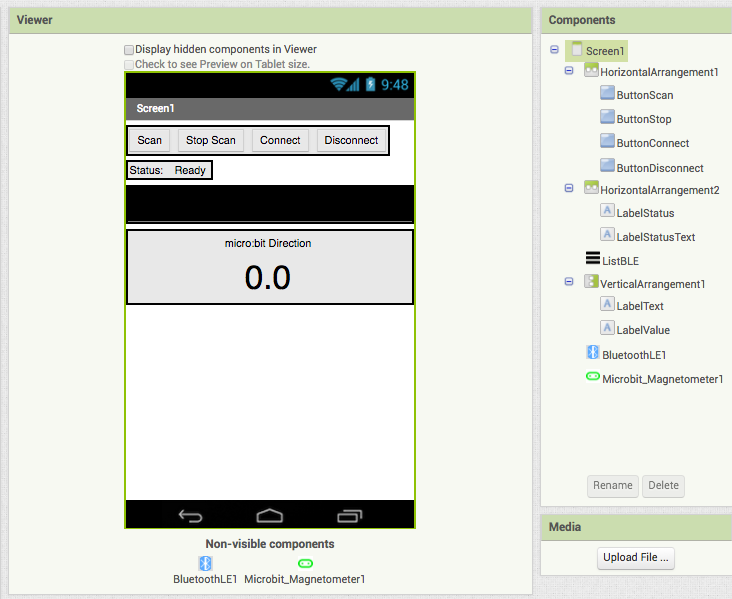
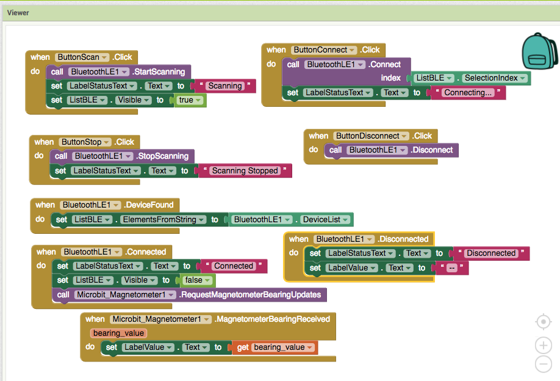

Some rough notes taken while creating an Android app in MIT App Inventor
A couple of extensions need to be loaded in to App Inventor


Install the "no pairing required" hex file from Bitty Software
The full documentation for the AppInventor library is available at: http://iot.appinventor.mit.edu/#/microbit/microbitintro
An alternative library for connecting AppInventor with the BBC micro:bit via Bluetooth is BlockyTalkyBLE: https://www.playfulcomputation.group/blockytalkyble.html